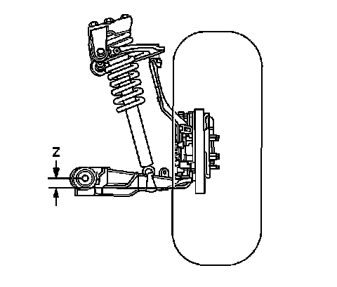
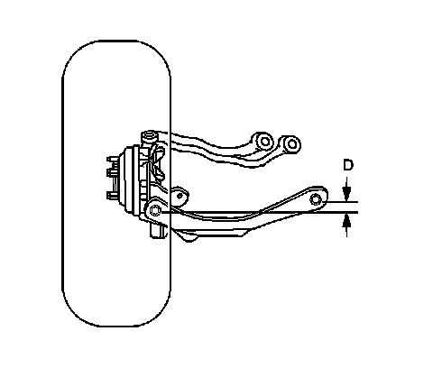

Alignment: Testing and Inspection
Trim Height Inspection
Trim Height Measurements
Trim height is a predetermined measurement relating to vehicle ride height. Incorrect trim heights can cause bottoming out over bumps, damage to the suspension components and symptoms similar to wheel alignment problems. Check the trim heights when diagnosing suspension concerns and before checking the wheel alignment.
Perform the following before measuring the trim heights:
1. Set the tire pressures to the pressure shown on the certification label. Refer to Vehicle Certification, Tire Placard, Anti-Theft, and Service Parts ID Label (Application and ID) .
2. Check the fuel level. Add additional weight if necessary to simulate a full tank.
3. Make sure the rear compartment is empty except for the spare tire.
4. Make sure the vehicle is on a level surface, such as an alignment rack.
5. Close the doors.
6. Close the hood.
7. All dimensions are measured vertical to the ground. Trim heights should be within 13 mm (0.5 in) to be considered correct.
Z Height Measurement
The Z height dimension measurement determines the proper ride height for the front end of the vehicle. There is no adjustment procedure. Repair may require replacement of suspension components.
1. Lift the front bumper of the vehicle up about 38 mm (1.5 in).
2. Gently remove your hands. Let the vehicle settle.
3. Repeat this operation for a total of 3 times.
Z Height Measurement:

4. Measure from the pivot bolt center line down to the lower corner of the lower ball joint in order to obtain the Z height measurement.
5. Push the front bumper of the vehicle down about 38 mm (1.5 in).
6. Gently remove your hands.
7. Allow the vehicle to settle into position.
8. Repeat the jouncing operation 2 more times for a total of 3 times.
9. Measure the Z dimension.
10. The true Z height dimension number is the average of the high and the low measurements. Refer to Trim Height Specifications (Trim Height Specifications) .
D Height Measurement
The D height dimension measurement determines the proper rear end ride height. There is no adjustment procedure. Repair may require replacement of suspension components.
1. With the vehicle on a flat surface, lift upward on the rear bumper 38 mm (1.5 in).
2. Gently remove your hands.
Allow the vehicle to settle into position.
3. Repeat the jouncing operation 2 more times for a total of 3 times.
D Height Measurement:

4. Measure the vertical distance between the centerline of the inboard rear lower control arm bolt and centerline of the outboard rear lower control arm bolt.
5. Push the rear bumper downward to 38 mm (1.5 in).
6. Gently remove your hands.
Allow the vehicle to settle into position.
7. Repeat the jouncing operation 2 more times for a total of 3 times.
8. Measure the D height dimension.
9. The true D height dimension number is the average of the high and the low measurements. Refer to Trim Height Specifications (Trim Height Specifications) .
10. If these measurements are out of specifications, inspect for the following conditions:
* Improper weight distribution
* Collision damage
* Worn or damaged suspension components